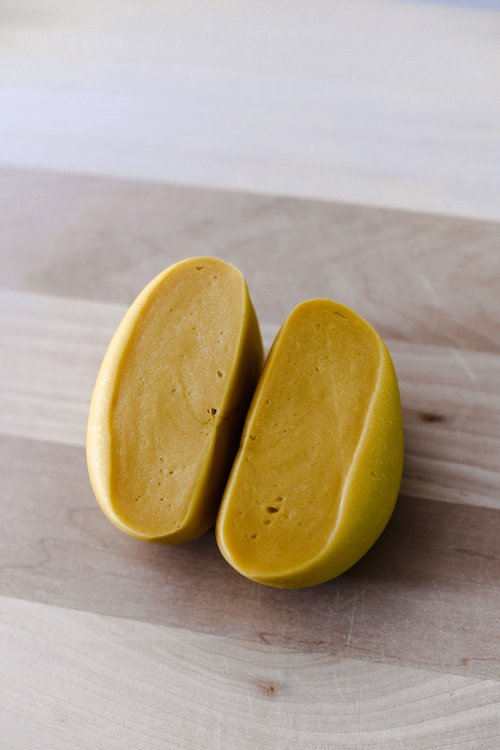

Pasta Dough

Description
This is a recipe for the perfect egg pasta dough. There are many different approaches online as to what the perfect ratios are, but I have found this to be the best.
Making egg pasta is a labour of love and takes some time and effort, but the reward is a beautiful dough that makes perfectly chewy pasta.
The amount of ingredients listed makes enough for 6 people, but the recipe can be modified.
The key is 55g of egg to every 100g of flour.
Ingredients
- 400 grams tipo 00 flour
- 220 grams of egg
Steps
- Measure and lay out your flour on your workbench, and create a well in the middle using the base of a bowl.
- Pour in your eggs to the middle of the well.
- Using a fork, slowly whisk, making an effort to break the yolks and combine them with the whites. Do not start incorporating too much flour at this stage, you are just whisking the eggs.
- Start incorporating a bit of flour at a time by scraping the edges of the well with your fork. Keep adding until the consistency resembles custard.
-
Grab a decent sized bench scraper now, and use it to scoop the flour from the outside onto your custardy-dough.
Using a chopping motion, cut the flour into the eggy mixture. Keep doing this until they are well mixed.
- Once the mixture resembles a shaggy dough, begin to use your hands to press it into a ball shape.
- Knead the dough with your hands on the workbench for approximately 10 minutes.
- Rest the dough under a bowl or wrapped in cling film for approximately 30 minutes.
- Your dough is now ready to roll, shape, and cut as you see fit! I recommend long pasta types like fettuccine for this egg dough.